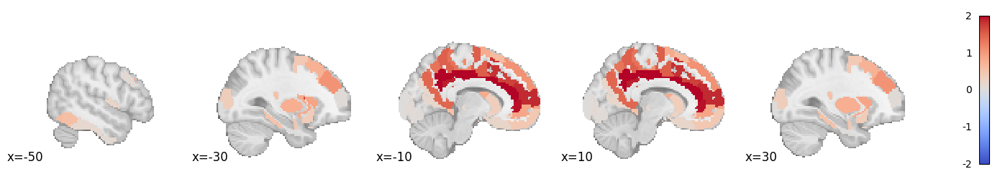
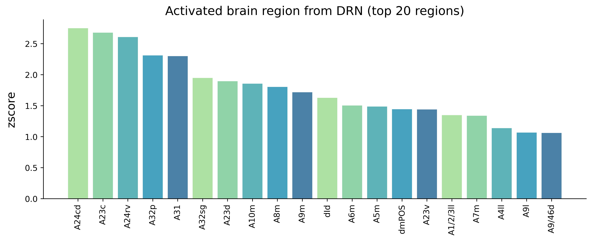

Annotating optogenetic circuits
This examples shows how to translate mouse stimulated pattern to human and annotate the optogenetic circuits using Neurosynth.
See the this page for more introduction of this tutorial.
[1]:
import pandas as pd
import numpy as np
from nilearn import image,plotting
from scipy import stats
import glob
import warnings
warnings.filterwarnings('ignore')
import matplotlib.image as mpimg
from matplotlib import pyplot as plt
[3]:
import transbrain as tb
mouse opto phenotypes
[4]:
AI_opto = pd.read_csv('ai_opto.csv')
DRN_opto = pd.read_csv('drn_opto.csv')
[5]:
AI_opto.set_index('Unnamed: 0',inplace=True,drop=True)
DRN_opto.set_index('Unnamed: 0',inplace=True,drop=True)
translating mouse ai stimulated pattern to human
[6]:
Transformer = tb.trans.SpeciesTrans('bn')
INFO:root:Initialized for bn atlas.
[7]:
AI_trans_in_human = Transformer.mouse_to_human(AI_opto,region_type='all')
INFO:root:Successfully translated mouse all phenotypes to human.
[8]:
AI_trans_in_human.sort_values(by='AI_opto',ascending=False).head(30)
[8]:
| AI_opto | |
|---|---|
| rTtha | 0.732512 |
| mPFtha | 0.568260 |
| PPtha | 0.469093 |
| dIg | 0.429137 |
| vId/vIg | 0.416277 |
| G | 0.389577 |
| vIa | 0.330202 |
| Otha | 0.286257 |
| posterovemtral putamen | 0.283502 |
| dId | 0.257844 |
| lPFtha | 0.224642 |
| A7ip | 0.204512 |
| dIa | 0.198164 |
| cTtha | 0.196228 |
| nucleus accumbens | 0.194498 |
| A13 | 0.185059 |
| A37mv | 0.173368 |
| A11l | 0.172564 |
| Stha | 0.171113 |
| A6cvl | 0.168572 |
| A1/2/3tonIa | 0.157768 |
| A12/47l | 0.157736 |
| A5l | 0.157478 |
| head of caudate | 0.155053 |
| mPMtha | 0.152135 |
| A4ll | 0.138186 |
| A2 | 0.129445 |
| A40rd | 0.125836 |
| A12/47o | 0.118290 |
| A20rv | 0.115590 |
[9]:
Human_atlas = tb.atlas.fetch_human_atlas(atlas_type='bn', region_type='all')
[10]:
ai_z_score_map = np.zeros_like(Human_atlas['atlas_data'])
for i,row in Human_atlas['info_table'].iterrows():
anatomical = row['Anatomical Name']
atlas_index = row['Atlas Index']
z_score = stats.zscore(AI_trans_in_human,axis=0)[AI_trans_in_human.index==anatomical].iloc[:,0].values[0]
ai_z_score_map[Human_atlas['atlas_data']==atlas_index] = z_score
[11]:
ai_z_score_map[ai_z_score_map<0] = 0
[12]:
Synthetic_ai_stimulated_img = image.new_img_like(Human_atlas['atlas'],ai_z_score_map)
[13]:
plotting.plot_stat_map(Synthetic_ai_stimulated_img ,draw_cross=False,display_mode='x',
annotate=True,cut_coords=range(-50,50,20),vmax=2,cmap='coolwarm',symmetric_cbar=True)
[13]:
<nilearn.plotting.displays._slicers.XSlicer at 0x7f47c50bb700>

translating mouse drn stimulated pattern to human
[14]:
DRN_trans_in_human = Transformer.mouse_to_human(DRN_opto,region_type='all')
INFO:root:Successfully translated mouse all phenotypes to human.
[15]:
DRN_trans_in_human.sort_values(by='DRN_opto',ascending=False).head(30)
[15]:
| DRN_opto | |
|---|---|
| A24cd | 1.003367 |
| A23c | 0.987585 |
| A24rv | 0.971778 |
| A32p | 0.906109 |
| A31 | 0.903385 |
| A32sg | 0.825395 |
| A23d | 0.813636 |
| A10m | 0.804780 |
| A8m | 0.793313 |
| A9m | 0.774017 |
| dId | 0.753773 |
| A6m | 0.726333 |
| A5m | 0.722672 |
| dmPOS | 0.713146 |
| A23v | 0.712375 |
| A1/2/3ll | 0.691926 |
| A7m | 0.689984 |
| A4ll | 0.645229 |
| A9l | 0.629315 |
| A9/46d | 0.628076 |
| dIa | 0.589051 |
| A14m | 0.586216 |
| Claustrum | 0.575182 |
| body of caudate | 0.570919 |
| A6dl | 0.570420 |
| Putamen | 0.565410 |
| A8vl | 0.556570 |
| A8dl | 0.531439 |
| A37lv | 0.526096 |
| A37elv | 0.517491 |
[16]:
drn_z_score_map = np.zeros_like(Human_atlas['atlas_data'])
for i,row in Human_atlas['info_table'].iterrows():
anatomical = row['Anatomical Name']
atlas_index = row['Atlas Index']
z_score = stats.zscore(DRN_trans_in_human,axis=0)[DRN_trans_in_human.index==anatomical].iloc[:,0].values[0]
drn_z_score_map[Human_atlas['atlas_data']==atlas_index] = z_score
[17]:
drn_z_score_map[drn_z_score_map<0] = 0
[18]:
Synthetic_drn_stimulated_img = image.new_img_like(Human_atlas['atlas'],drn_z_score_map)
[19]:
plotting.plot_stat_map(Synthetic_drn_stimulated_img ,draw_cross=False,display_mode='x',
annotate=True,cut_coords=range(-50,50,20),vmax=2,cmap='coolwarm',symmetric_cbar=True)
[19]:
<nilearn.plotting.displays._slicers.XSlicer at 0x7f47be23fbe0>

annotating using NeuroSynth.
[20]:
ai_thre = np.sort(stats.zscore(AI_trans_in_human['AI_opto'].values))[-20]
drn_thre = np.sort(stats.zscore(DRN_trans_in_human['DRN_opto'].values))[-20]
[21]:
Synthetic_ai_img_data = np.asarray(Synthetic_ai_stimulated_img.dataobj)
Synthetic_drn_img_data = np.asarray(Synthetic_drn_stimulated_img.dataobj)
[22]:
Synthetic_ai_img_data[Synthetic_ai_img_data<ai_thre] = 0
Synthetic_drn_img_data[Synthetic_drn_img_data<drn_thre] = 0
[23]:
ai_dict_top_term = {}
for path in glob.glob('./neurosynth_data/*.nii.gz'):
term_ = path.split('/')[-1].split('_')[0]
target_z_map_data = np.asarray(image.load_img(path).dataobj)
target_z_map_data[target_z_map_data<0]=0
stat_zero_data = np.zeros_like(target_z_map_data)
stat_zero_data[(target_z_map_data!=0)&(Synthetic_ai_img_data!=0)] = 1
try:
overlap_rate = len(stat_zero_data.flatten()[stat_zero_data.flatten()!=0])/len(target_z_map_data.flatten()[target_z_map_data.flatten()!=0])
ai_dict_top_term[term_] = overlap_rate
except:
print(term_)
[24]:
ai_top_term_dataframe = pd.DataFrame(ai_dict_top_term.values())
ai_top_term_dataframe.index = ai_dict_top_term.keys()
[25]:
ai_top_term_dataframe.sort_values(by=0,ascending=False).head(20)
[25]:
| 0 | |
|---|---|
| addiction | 0.328380 |
| decision making | 0.276786 |
| decision | 0.266892 |
| eating | 0.264292 |
| risk | 0.244253 |
| anticipation | 0.223714 |
| loss | 0.218065 |
| reinforcement learning | 0.216023 |
| selective attention | 0.207113 |
| pain | 0.201087 |
| attention | 0.183161 |
| reward anticipation | 0.176414 |
| fear | 0.165735 |
| inhibition | 0.162567 |
| impulsivity | 0.152047 |
| fixation | 0.149417 |
| task difficulty | 0.145070 |
| maintenance | 0.140092 |
| anxiety | 0.139648 |
| arousal | 0.136869 |
[26]:
drn_dict_top_term = {}
for path in glob.glob('./neurosynth_data/*.nii.gz'):
term_ = path.split('/')[-1].split('_')[0]
target_z_map_data = np.asarray(image.load_img(path).dataobj)
target_z_map_data[target_z_map_data<0]=0
stat_zero_data = np.zeros_like(target_z_map_data)
stat_zero_data[(target_z_map_data!=0)&(Synthetic_drn_img_data!=0)] = 1
try:
overlap_rate = len(stat_zero_data.flatten()[stat_zero_data.flatten()!=0])/len(target_z_map_data.flatten()[target_z_map_data.flatten()!=0])
drn_dict_top_term[term_] = overlap_rate
except:
print(term_)
[27]:
drn_top_term_dataframe = pd.DataFrame(drn_dict_top_term.values())
drn_top_term_dataframe.index = drn_dict_top_term.keys()
[28]:
drn_top_term_dataframe.sort_values(by=0,ascending=False).head(20)
[28]:
| 0 | |
|---|---|
| monitoring | 0.443730 |
| uncertainty | 0.362245 |
| response selection | 0.340757 |
| inference | 0.318267 |
| efficiency | 0.264368 |
| reasoning | 0.254344 |
| memory retrieval | 0.253528 |
| social cognition | 0.230468 |
| thought | 0.230189 |
| inhibition | 0.224599 |
| belief | 0.217454 |
| decision | 0.207432 |
| response inhibition | 0.202002 |
| autobiographical memory | 0.199622 |
| mood | 0.199073 |
| valence | 0.193038 |
| salience | 0.192308 |
| episodic memory | 0.191044 |
| task difficulty | 0.187382 |
| decision making | 0.180952 |
[29]:
AI_trans_in_human_sorted = stats.zscore(AI_trans_in_human).sort_values(by='AI_opto',ascending=False)
DRN_trans_in_human_sorted = stats.zscore(DRN_trans_in_human).sort_values(by='DRN_opto',ascending=False)
[30]:
categories = list(AI_trans_in_human_sorted[AI_trans_in_human_sorted['AI_opto']>=ai_thre].index.values)
values = list(stats.zscore(AI_trans_in_human_sorted)[AI_trans_in_human_sorted['AI_opto']>=ai_thre]['AI_opto'].values)
[31]:
colors = ['#99d98c', '#76c893', '#34a0a4', '#168aad', '#1e6091']
fig,ax = plt.subplots(1,1,figsize=(12,4),dpi=500)
ax.spines['right'].set_visible(False)
ax.spines['top'].set_visible(False)
plt.bar(categories, values, color=colors,alpha=0.8)
plt.title('Activated brain region from AI (top 20 regions)',fontsize=15)
plt.ylabel('zscore',labelpad=10,fontsize=14)
plt.xticks(categories, rotation='vertical')
plt.show()

[32]:
categories = list(DRN_trans_in_human_sorted[DRN_trans_in_human_sorted['DRN_opto']>=drn_thre].index.values)
values = list(stats.zscore(DRN_trans_in_human_sorted)[DRN_trans_in_human_sorted['DRN_opto']>=drn_thre]['DRN_opto'].values)
[33]:
colors = ['#99d98c', '#76c893', '#34a0a4', '#168aad', '#1e6091']
fig,ax = plt.subplots(1,1,figsize=(12,4),dpi=500)
ax.spines['right'].set_visible(False)
ax.spines['top'].set_visible(False)
plt.bar(categories, values, color=colors,alpha=0.8)
plt.title('Activated brain region from DRN (top 20 regions)',fontsize=15)
plt.ylabel('zscore',labelpad=10,fontsize=14)
plt.xticks(categories, rotation='vertical')
plt.show()
